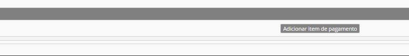

Ação Social
A Ação Social Escolar (ASE) Resume-se a um conjunto de medidas destinadas a garantir a igualdade de oportunidades de acesso e sucesso escolares a todos os alunos e a promover medidas de apoio socioeducativo destinadas aos alunos de agregados familiares cuja situação económica determina a necessidade de comparticipações financeiras
Direção-Geral de Educação
Pagamentos
Quando abordamos o tema ação social, mencionamos diretamente os pagamentos a efetuar nos estabelicimentos de ensino por parte dos alunos.
Para tal, existe determinados passos a seguir para que o procedimento seja feito corretamente:
1º Passo: Na matrícula do aluno, colocar a data de ínico de frequência
2º Passo: No separador ASE, atribuir o escalão de abono do aluno, comprovado pela Segurança Social da Madeira.
3º Passo: No separador Pagamentos deve preencher a grelha do mês (Onde refere os dias da semana que o aluno almoça na escola) e grava. Depois deve clicar Retificar mês atual.
No início do ano letivo, as escolas devem juntar aos pagamentos a inscrição e o seguro Escolar.
Aviso
Caso o aluno seja transferido de escola, não paga novamente a inscrição e o seguro escolar.
Caso o aluno entre na escola no decorrer do ano letivo, a escola deve fazer o processo de pagamento de inscrição e de seguro escolar manualmente:
- No separador pagamentos deve clicar em "adicionar item de pagamento" e selecionar inscrição e seguro escolar.

Presenças na cantina
Quando abordamos a ação social, ligamos automáticamente aos pagamentos e as faltas por mês.
Aviso
- Que tipo de faltas existem?
- E quando devem ser marcadas?
No separador alunos deve clicar em faltas por mês. Pode constar que existem 4 tipos de faltas:
Tabela
| Tipo de faltas | Quando marcar | Horário | Pagamentos |
|---|---|---|---|
| Avisadas | São faltas avisadas com antecedência | marcar até às 16:30 do dia anterior | Será descontada na mensalidade no mês seguinte |
| Não avisadas | São faltas que não foram avisadas previamente | ---- | Esc. 1 paga o valor da refeição. Outros escalões não têm retorno do valor pago. |
| Imprevistas | Faltas avisadas com pouca antecedência | das 16:30 do dia anterior até ao meio dia do próprio dia | Valor será descontado no mês seguinte. |
| Não previstas | É marcado quando o aluno não costuma comer e nesse dia almoça. Ou quando o aluno avisa que vai faltar e no dia está presente e almoça. | ---- | O valor da refeiçao é cobrado no mês seguinte. |
É importante manter as faltas e presenças atualizadas para que o processamento dos pagamentos seja feito corretamente.